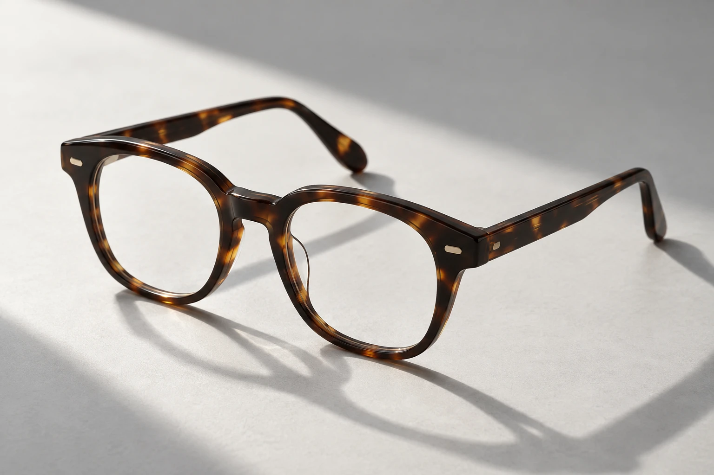

Catálogos premium.
Descubre monturas y colecciones para ampliar las opciones de tu negocio.
Una nueva perspectiva
para tu óptica.
Marcas que reconoces. Colecciones por descubrir.
Información mayorista, directo a tu inbox.
Para ópticas y distribuidores.
De los esenciales cotidianos
a las firmas de moda.
Consulta disponibilidad de marcas y colecciones para tu mercado.

FORM / TEXTURE / DETAILExplora nuevas posibilidades para el portafolio de tu óptica. Conoce las colecciones y consulta las opciones comerciales con LAG Medical.
Descubre monturas y colecciones para ampliar las opciones de tu negocio.
Recibe información sobre precios y condiciones comerciales para compradores profesionales.
Mantente al día con actualizaciones de catálogo y novedades de las marcas.
Solo tu email. Cancela tu suscripción cuando quieras.
Para ópticas, distribuidores y profesionales que buscan información comercial de monturas para su negocio.
Actualizaciones de catálogos, novedades de colecciones e información mayorista de LAG Medical.
La disponibilidad de marcas, modelos y condiciones comerciales puede variar según el mercado. El equipo de LAG Medical puede orientarte para tu negocio.